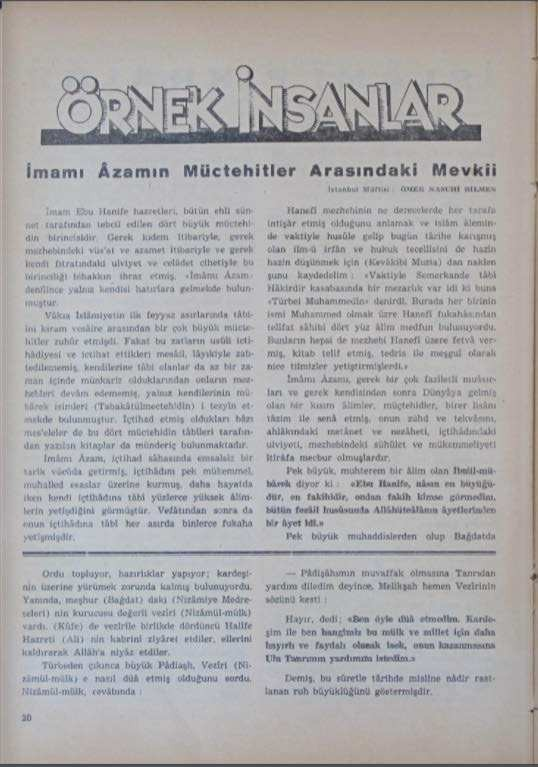
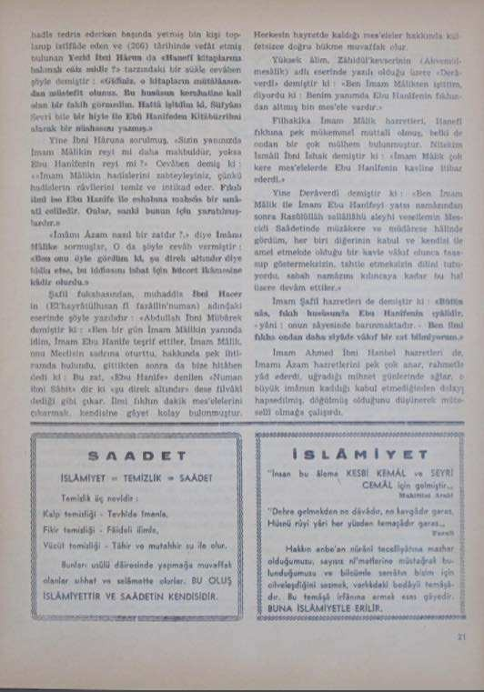

İmâmı Âzamın Müctehitler Arasındaki Mevḳiʿi11
İmâm Ebû Hanife Ḥażretleri, bütün ehli sünnet ṭarafından tebcîl edilen dört büyük müctehidin birincisidir. Gerek kıdem iʿtibâriyle gerek meẕhebindeki vüsʿat ve ʿaẓamet iʿtibâriyle ve gerek kendi fıṭratındaki ʿulviyyet ve celâdet cihetiyle bu birinciliği bihaḳḳın ihraz etmiş, “İmâmı Âzam” denilince yalnız kendisi ḫâṭırlara gelmekde bulunmuştur.
Vâḳıʿa İslâmiyyetin ilk feyyaz ʿaṣırlarında ṭabîʿîni kirâm vesaire arasından bir çok büyük müctehitler ẓuhûr etmişdi. Faḳaṭ bu ẕâtların uṣûli içtihâdiyesi ve içtihat ettikleri mesâʾil, lâyıḳiyle zabtedilmemiş, kendilerine tâbiʿ olanlar da az bir zamân içinde münkariz olduklarından onların meẕhebleri devâm edememiş, yalnız kendilerinin mübârek isimleri (Tabakâtülmüctehidîn) i tezyîn etmekte bulunmuştur. İçtihad etmiş oldukları baʿżı mesʾeleler de bu dört müctehidîn tâbiʿleri ṭarafından yazılan kitâblarda münderiç bulunmaktadır.
İmâmı Âzam, içtihad sâḥasında ems̱âlsiz bir ṭarîḳ vücûda getirmiş, içtihadını pek mükemmel, muhalled esâslar üzerine kurmuş, daha ḥayâtda iken kendi içtihâdına tâbiʿ yüzlerce yüksek ʿâlimlerin yetiştiğini görmüştür. Vefâtından sonra da onun içtihâdına tâbiʿ her ʿaṣırda binlerce fuḳahâʾ yetişmişdir.
Hanefî meẕhebinin ne derecelerde her ṭarafa intişâr etmiş olduğunu anlamak ve İslâm ʿâleminde vaḳtiyle ḥuṣûle gelip bugün târîḫe karışmış olan ʿilm-ü ʿirfân ve ḥuḳūḳ tecellîsini de ḥazîn ḥazîn düşünmek için (Kevâkibi Muzia) dan naklen şunu kaydedelim: “Vaḳtiyle Semerkande tâbiʿ Hâkirdir kasabasında bir mezarlık var idi ki buna “Türbei Muhammedîn” denirdi. Burada her birinin ismi Muhammed olmak üzere Hanefî fuḳahâsından telîfat ṣâḥibi dört yüz ʿâlim medfun bulunuyordu. Bunların hepsi de meẕhebi Hanefî üzere fetva vermiş, kitâb teʾlîf etmiş, tedris ile meşgul olarak nice tilmizler yetiştirmişlerdi.”
İmâmı Azam’ı, gerek bir çok fażîletli muʿâṣırları ve gerek kendisinden sonra Dünyâya gelmiş olan bir ḳısım ʿâlimler, müctehidler, birer lisânı taʿẓîm ile senâ etmiş, onun zühd ve tekvâsını, aḫlâḳındaki metânet ve nezâheti, içtihâdındaki ʿulviyyeti, meẕhebindeki sühûlet ve mükemmeliyeti iʿtirâfa mecbûr olmuşlardır.
Pek büyük, muḥterem bir ʿâlim olan İbnül-mübârek diyor ki: “Ebû Hanîfe, nâsın en büyüğüdür, en faḳīhidir, ondan faḳīh kimse görmedim, bütün feżâʾil ḫuṣûṣunda Allâhüteâlâ’nın âyetlerinden bir âyet idi.”
Pek büyük muhaddislerden olup Bağdatda ḥadîs̱ tedris ederken başında yetmiş bin kişi toplanıp istifâde eden ve (206) târîḫinde vefât etmiş bulunan Yezid İbn-i Ḥârun da “Hanefî kitâblarına bakmak câʾiz midir?” ṭarzındaki bir suʾâle cevaben şöyle demiştir: “Gidiniz, o kitâbların müṭâlaʿasından müstefîd olunuz. Bu ḫuṣûṣun kerâhatine ḳāʾil olan faḳīh görmedim. Ḥattâ işitdim ki, Süfyanı Sevrî bile bir hiyle ile Ebû Hanîfe’den Kitâbürrihni alarak bir nüsḫasını yazmış.”
Yine İbn-i Ḥâruna sorulmuş, “Sizin yanınızda imâm Mâlikin reʾyi mi daha maḳbûldür? Yoksa Ebû Hanîfenin reʾyi mi?” Cevaben demiş ki: “İmâm Mâlik’in ḥadîs̱lerini zabteyleyiniz, çünkü ḥadîs̱lerin râvîlerini temîz ve intikad eder. Fıḳh ʿilmî ise Ebû Hanîfe ile aṣḥâbına maḫṣûṣ bir sınâati celîledir. Onlar, sanki bunun için yaratılmışlardır.”
“İmâmı Âzam nasıl bir ẕâtdır?” diye İmâmı Mâlike sormuşlar, o da şöyle cevâb vermiştir: “Ben onu öyle gördüm ki, şu direk altındır diye iddiʿâ etse, bu iddiʿâsını isbat için ḥüccet ikâmesine ḳādir olurdu.”
Şafiî fuḳahâsından, muhaddis İbn-i Hacer’in (El’hayrâtülhısan fi fazâilin’numan) adındaki es̱erinde şöyle yazılıdır: “Abdullah İbn-i Mübârek demiştir ki: "Ben bir gün İmâm Mâlik’in yanında idim, imâm Ebû Hanîfe teşrif ettiler, İmâm Mâlik, onu meclisin ṣadrına oturttu, ḥaḳḳında pek iḥtirâmda bulundu, gittikten sonra da bize hitâben dedi ki: Bu ẕât, "Ebû Hanîfe”
denilen “Numan İbn-i S̱âbit” dir ki “şu direk altındır” dese filvâkî dediği gibi çıkar, ʿİlmî fıḳhın dakik mesʾelelerini çıkarmak, kendisine ġāyet kolay bulunmuştur. Herkesin ḥayretde kaldığı mesʾeleler ḥaḳḳında külfetsizce doğru ḥükme muvaffaḳ olur.
Yüksek ʿâlim, Zâhidül’kevserinin (Akvemül-mesâlik) adlı es̱erinde yazılı olduğu üzere “Derâverdi” demiştir ki: "Ben İmâm Mâlik’ten işittim, diyordu ki: Benim yanımda Ebû Hanîfenin fıḳhından altmış bin mesʾele vardır.”
Filhakika İmâm Mâlik Ḥażretleri, Hanefî fıḳhına pek mükemmel muṭṭaliʿ olmuş, belki de ondan bir çok mülhem bulunmuştur. Nitekim İsmâil İbn-i İshak demiştir ki: “İmâm Mâlik çok kere mesʾelelerde Ebû Hanîfenin kavline iʿtibâr ederdi.”
Yine Derâverdî demiştir ki: “Ben İmâm Mâlik ile İmâm Ebû Hanifeyi yatsı namâzından sonra Rasûlûllâh sallallahu aleyhi vesellemin Mescidi Saʿâdetinde müzâkere ve müdârese ḥâlinde gördüm, her biri diğerinin ḳabûl ve kendisi ile ʿamel etmekde olduğu bir kavle vâḳıf olunca taʿaṣṣub göstermeksizin, taḥtie etmeksizin dilini tutuyordu, ṣabâḥ namâzını kılıncaya kadar bu ḥâl üzere devâm ettiler.”
İmâm Şafiî Ḥażretleri de demiştir ki: “Bütün nâs, fıḳh ḫuṣûṣunda Ebû Hanîfe’nin ıyâlidir, - yâni: onun sayesinde barınmaktadır.- Ben ʿilmî fıḳha ondan daha ziyâde vâḳıf bir ẕât bilmiyorum.”
İmâm Ahmed İbn-i Hanbel Ḥażretleri de, İmâmı Âzam Ḥażretlerini pek çok anar, raḥmetle yâd ederdi, uğradığı mihnet günlerinde ağlar, o büyük imâmın kadılığı ḳabûl etmediğinden dolayı hapsedilmiş, döğülmüş olduğunu düşünerek müteselli olmağa çalışırdı.
İstanbul Müftisi: Ömer Nasûhî Bilmen


Dipnotlar
İslâmın Nûru Dergisi, 1. Cilt 1. Sayı, 20 Nisan 1951, https://katalog.idp.org.tr/yazilar/28673/imâmi-azamin- muctehitler-arasindaki-mevḳiʿi
↩
Kaynak künyesi. Ömer Nasûhi Bilmen, “İmâmı Âzamın Müctehitler Arasındaki Mevḳiʿi1”, İslâm’ın Nûru, 1. cilt, 1. sayı, 20 Nisan 1951.
Bu metin Ömer Nasûhi Bilmen Makaleler Arşivi’nden alınmıştır: https://omernasuhibilmen.github.io/articles/imami-azamin-muctehitler-arasindaki-mevk.html
Osmanlıca kelimeler TDV İslâm Ansiklopedisi (DİA) transkripsiyon alfabesiyle gösterilmiştir. Yayına hazırlayanlar: Ahmet Şengül, Mevlüt Çelik.